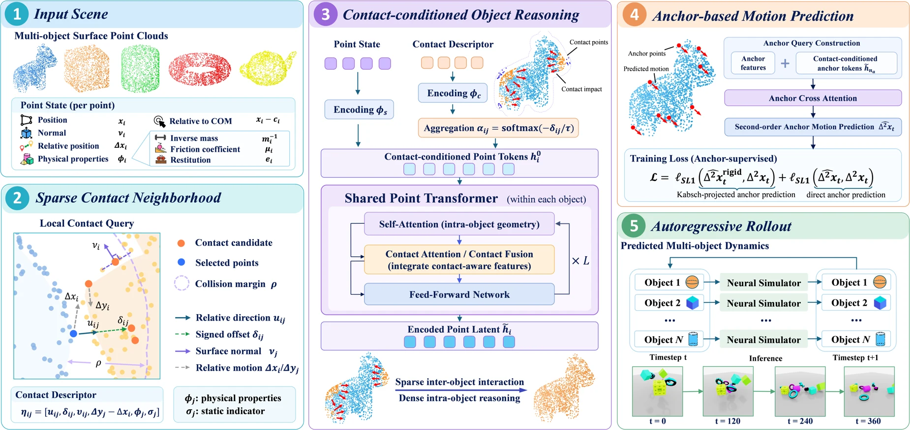
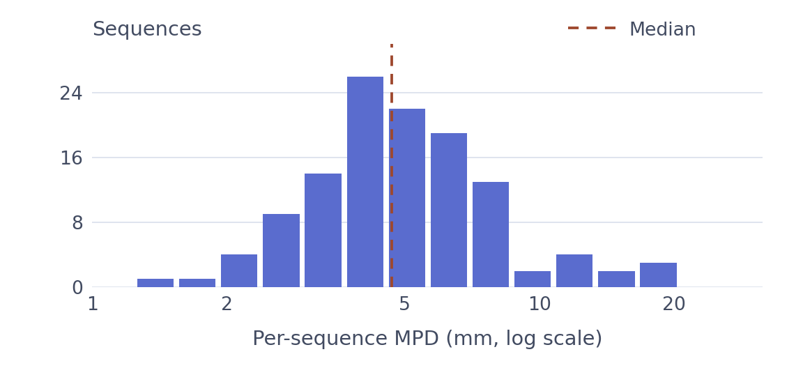
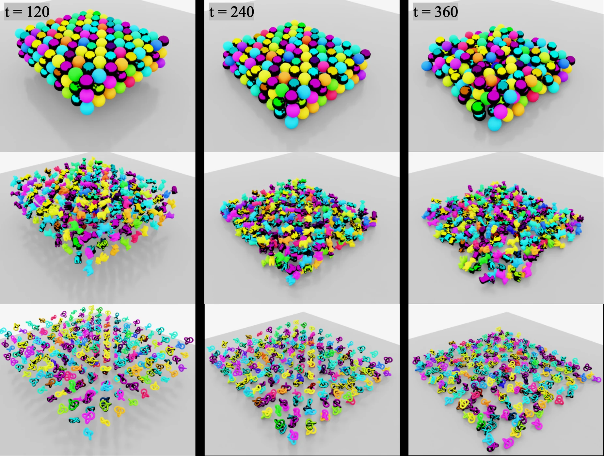
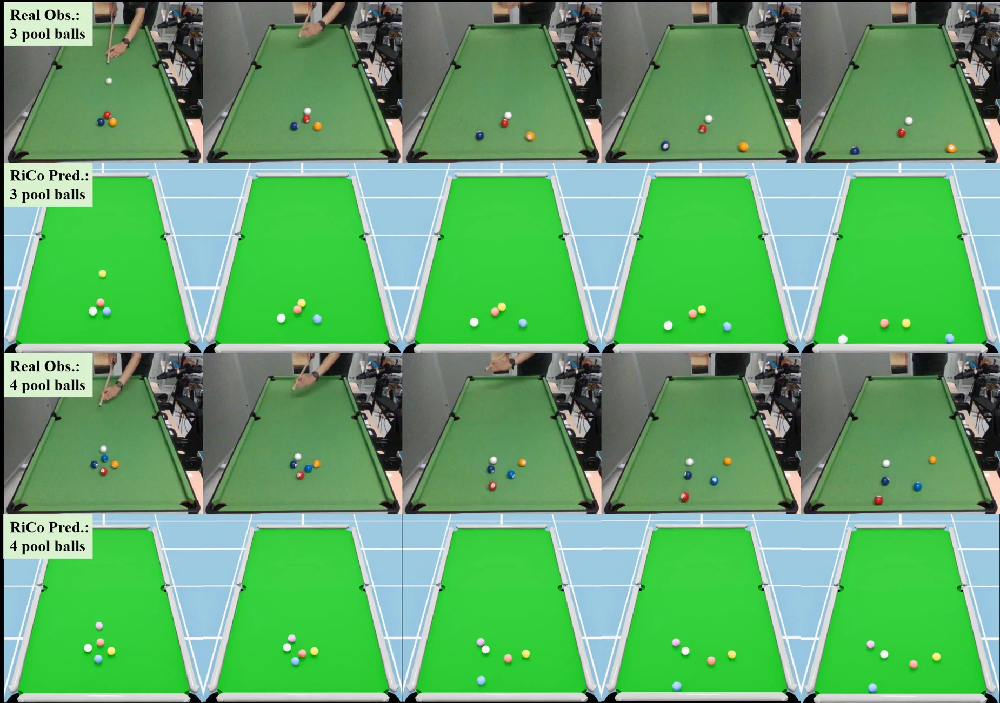

Sparse contact neighborhoods
For each surface point, RiCo keeps nearby candidates from other objects and the environment. Their relative geometry, motion and physical properties describe each potential interaction.
1 The Chinese University of Hong Kong, Shenzhen 2 DexForce Co., Ltd. 3 South China University of Technology 4 Shenzhen Loop Area Institute † Corresponding author
Accurate simulation of rigid-body interactions is essential for predictive physical world models. Despite recent progress in modeling object dynamics, capturing how local contacts between surfaces shape object motion remains challenging. While end-to-end world models predict interactions across entire scenes or objects, in practice, rigid-body contact is inherently local, and only nearby surfaces can directly exchange contact forces. Motivated by this observation, we introduce Rigid-body Contact Reasoning (RiCo), which represents interactions between objects through sparse neighborhoods of contact surface points. RiCo combines each point’s state with the relative geometry, motion, and physical properties of nearby surfaces, then reasons across the object’s points to determine how these local contacts jointly affect its motion. By confining cross-object reasoning to nearby surfaces while propagating contact information within each rigid body, RiCo retains fine-grained interaction details without the cost of modeling every pair of scene points. Such properties enable RiCo a higher accuracy and contact fidelity. Experiments on MOVi-benchmark demonstrate that RiCo reduces 100-frame position and orientation errors by 31–35% and approximately 38%, respectively, compared with baselines. Moreover, RiCo achieves high contact fidelity, with ground-truth-relative penetration-time and mean-depth differences of 11.0% and 2.22 mm, respectively. RiCo further generalizes zero-shot from small-scale training scenarios to scenes containing 270 objects. Our real-world multi-ball collision experiments further provide preliminary evidence of sim-to-real transfer.
Method
RiCo takes two consecutive scene states as input. It searches for nearby surfaces, combines the resulting contact information within each body, and predicts the next scene state.
For each surface point, RiCo keeps nearby candidates from other objects and the environment. Their relative geometry, motion and physical properties describe each potential interaction.
A shared point Transformer lets points within the same object exchange contact information so that the model can combine the effects of simultaneous contacts.
The decoder predicts displacements at selected surface anchors. Rigid alignment recovers the translation and rotation for the entire body.

Qualitative results
Contact fidelity · MOVi-B
We subtract the ground-truth penetration-time ratio and mean penetration depth from their predicted values to obtain ΔPTR and ΔMPD, respectively.
| Model | ΔPTR | ΔMPD |
|---|---|---|
| RiCo | 11.0% | 2.22 mm |
| RigidFormer | 39.6% | 46.85 mm |
| HOPNet | 42.7% | 285.86 mm |
RigidFormer was evaluated on 116 of 120 test sequences with matching object counts. RiCo and HOPNet were evaluated on all 120.
Each MOVi-B test sequence contributes one mean penetration depth. The histogram shows sequences with a penetration event.

120 of 120 test sequences evaluated.
Scaling
RiCo was trained on MOVi-B scenes with 3–10 objects and evaluated on three scenes with 270 objects each. Prediction error grew over longer rollouts.

Transfer
Simulated predictions and real camera recordings are paired by trial. The paper evaluated RiCo on five real billiard sessions after training on simulated collisions.

Quantitative results
Compare RiCo with RigidFormer and HopNet across three MOVi benchmarks and three prediction horizons.
| Model | 50 frames | 75 frames | 100 frames |
|---|---|---|---|
| HopNet | 0.054 / 5.64 | 0.115 / 11.84 | 0.196 / 18.83 |
| RigidFormer | 0.049 / 5.06 | 0.103 / 10.90 | 0.177 / 18.32 |
| RiCo | 0.031 / 2.86 | 0.067 / 6.49 | 0.115 / 11.40 |
Lower is better for both metrics. See all baselines and evaluation details
See the MOVi-B penetration results for the three-model comparison and per-sequence distributions.
RiCo models passive rigid bodies. The paper leaves deformable objects and actuated systems for future work.
@misc{ouyang2026rico,
title = {RiCo: Neural Simulation of Rigid-Body Interactions via Local Contact Reasoning},
author = {Ouyang, Ruixiang and Qiao, Guanren and Meng, Fansen and Deng, Yueci and Jin, Ruixing and Jia, Kui and Liu, Guiliang},
year = {2026},
eprint = {2610.12333},
archivePrefix = {arXiv},
primaryClass = {cs.CV},
url = {https://arxiv.org/abs/2610.12333}
}